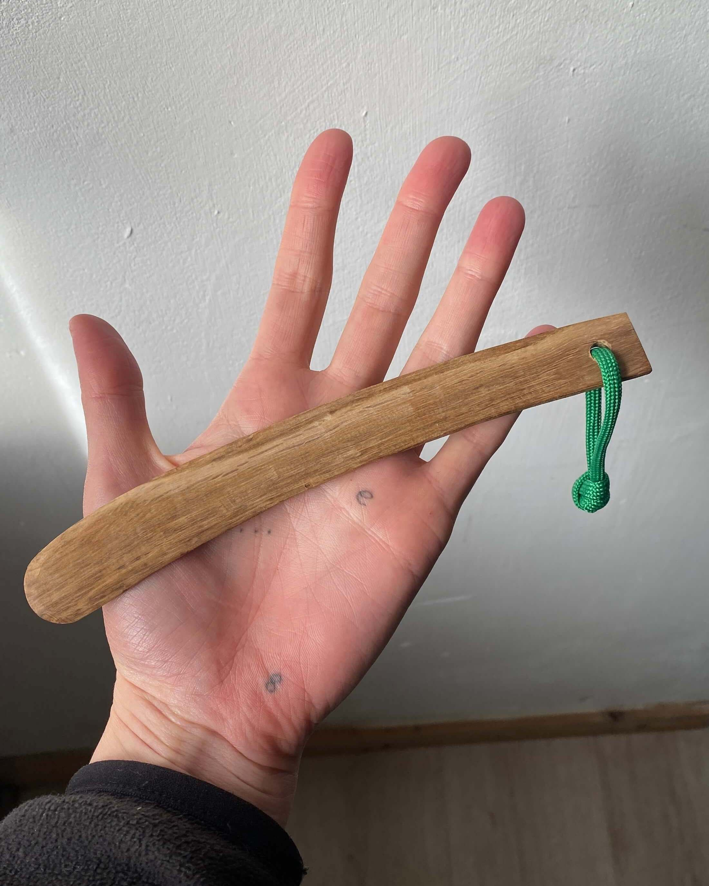
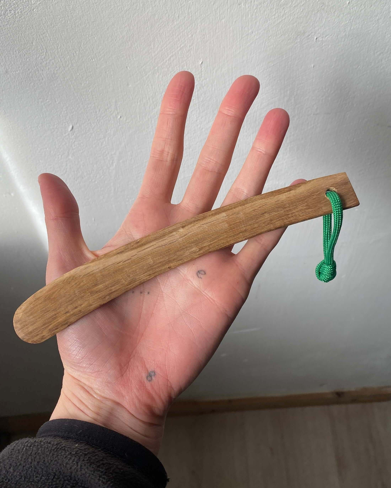

Butter Knife
No sabías que necesitabas un cuchillo para untar hasta que te enteraste de que vigas.works hizo uno.
Cada butter knife está hecho a partir de un trozo de roble de mi jardín.
El nombre 'butter knife' no quiere decir que sea específico para mantequilla, puedes untar cualquier cosa que se te antoje con él.
Antes de usarlo aplica unas cuantas capas de AOVE por todo el cuchillo. Si usas mucho tu butter knife (y lo lavas frecuentemente) está bien que de vez en cuando apliques una nueva capa de AOVE.
Puedes colgarlo con la cuerda, quitarla si te molesta o incluso cortarlo si se te hace muy largo.
Cada butter knife viene con un ligero afilado por ambas aristas, todo surgió debido a una discrepacia en el uso del cuchillo entre los primeros usuarios del butter knife. Para que cada uno pueda elegir, ambos lados tienen filo. Qué ironía que se le llame cuchillo a un instrumento que está pensado para untar, no cortar.
Roble de mi jardín
L x W x H: 18'5 x 0'3 x 2 cm (estas medidas son aproximadas)
Cuerda paracord verde
2 unidades en stock
18€
 
